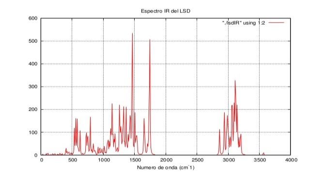

Seismography
The rover will be equipped with triaxial accelerometers that will record surface seismic waves as the ROVER comes into contact with the lunar soil. Allowing to obtain:
- Periods of ground vibration.
- Col accumsan arcu mi aliquet placerat.
- Correlations between VP and VS velocities with the frequency period.
- Seismic response spectra for seismic-resistant design.

Spectrometry
The visible and near-IR wavelenghts are widely used for lunar mineralogic remote sensing, where the spectra of lunar materials are strongly influenced by the space weathering. This concept is defined as the gradual alteration of materials when they are exposed to a variety of natural processes that occur in the space environment.
